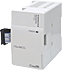

MELSEC-F series Network/Communication

FX series supports networking according to control needs, including high speed network with CC-Link and CC-Link/LT for reduced wiring.
Also, easily constructed simple data link between FX series and communication with RS-232C and RS-485 devices are supported.
CC-Link
| Model | Master station function |
Remote/slave function |
Distance | Applicable FX PLC | ||||||||||
|---|---|---|---|---|---|---|---|---|---|---|---|---|---|---|
| FX 3S |
FX 3G |
FX 3U |
FX 3GC |
FX 3UC |
||||||||||
| FX3U-16CCL-M*1 CC-Link master block (Master station) |
○ | × | 1,200 m maximum | × | ○ Max. 1 unit |
*4 ○ Max. 1 unit |
*2 ○ Max. 1 unit |
*2*3 ○ Max. 1 unit |
||||||
 |
FX2N-32CCL CC-Link Interface block (Remote device station) Discontinued |
× | ○ | 1,200 m maximum | × | ○ | ○ | *2 ○ |
*2 ○ |
|||||
|  | FX3U-64CCL CC-Link Interface block (Intelligent device station) |
× | ○ | 1,200 m maximum | × | ○ Max. 1 unit |
○ Max. 1 unit |
*2 ○ Max. 1 unit |
*2*3 ○ Max. 1 unit |
|||||
- *1The FX3U-16CCL-M, FX2N-16CCL-M cannot be used at the same time with the FX2N-32ASI-M.
The FX3U-16CCL-M cannot be used at the same time with the FX2N-16CCL-M.
FX3U-16CCL-M and FX2N-16CCL-M cannot be used together.- [Remote I/O station]
Maximum 8 stations can be connected (1 station occupies 32 I/O points of the PLC) - [Total of remote device stations + intelligent device stations]
Maximum 8 stations can be connected (However, the total number of RX/RY points is 256 or less)
- [Remote I/O station]
- *2When connecting to FX3GC, FX3UC, FX2NC-CNV-IF or FX3UC-1PS-5V is required.
- *3FX3UC supported from version 2.20 or later.
- *4FX3U supported from version 2.20 or later.
CC-Link/LT
| Model | Master station function |
Remote/slave function |
Applicable FX PLC | ||||||||||
|---|---|---|---|---|---|---|---|---|---|---|---|---|---|
| FX 3S |
FX 3G |
FX 3U |
FX 3GC |
FX 3UC |
|||||||||
| FX2N-64CL-M CC-Link/LT master block To be discontinued |
○ | × | × | ○ Max. 8 units |
○ Max. 8 units |
*1 ○ Max. 5 units |
*1 ○ Max. 5 units |
||||||
| FX3UC-32MT-LT Built-in CC-Link/LT master To be discontinued |
○ | × | - | - | - | - | - | ||||||
 |
FX3UC-32MT-LT-2 Built-in CC-Link/LT master To be discontinued |
○ | × | - | - | - | - | - | |||||
- *1When connecting to FX3GC, FX3UC, FX2NC-CNV-IF or FX3UC-1PS-5V is required.
CC-Link/LT: Power Adapter・Dedicated Power Supply
| Model | Applicable FX PLC | ||||||||||
|---|---|---|---|---|---|---|---|---|---|---|---|
| FX 3S |
FX 3G |
FX 3U |
FX 3GC |
FX 3UC |
|||||||
 |
CL1PAD1 Power Adapter To be discontinued |
× | ○ | ○ | ○ | ○ | |||||
| CL1PSU-2A Dedicated Power Supply |
× | ○ | ○ | ○ | ○ | ||||||
Ethernet
| Model | Applicable FX PLC | ||||||||||
|---|---|---|---|---|---|---|---|---|---|---|---|
| FX 3S |
FX 3G |
FX 3U |
FX 3GC |
FX 3UC |
|||||||
| FX3U-ENET-L
To be discontinued |
× | × | *1 ○ Max. 1 unit |
× | *1*2 ○ Max. 1 unit |
||||||
 |
FX3U-ENET-ADP
To be discontinued |
*7*8 ○ Max. 1 unit |
*3*5 ○ Max. 1 unit |
*4*6 ○ Max. 1 unit |
*3 ○ Max. 1 unit |
*4*6 ○ Max. 1 unit |
|||||
- *1FX3U, FX3UC supported from version 2.21 or later.
- *2When connecting to FX3UC, FX2NC-CNV-IF or FX3UC-1PS-5V is required.
- *3FX3G, FX3GC supported from version 2.20 or later.
- *4FX3U, FX3UC supported from version 3.10 or later.
- *5When connecting to FX3G, FX3G-CNV-ADP is required.
- *6When connecting to FX3U or FX3UC-32MT-LT(-2), a function expansion board is required.
- *7When connecting to FX3S, FX3S-CNV-ADP is required.
- *8When connecting to FX3S, supported by FX3U-ENET-ADP Ver.1.20 or later.
MODBUS
| Model | Applicable FX PLC | ||||||||||
|---|---|---|---|---|---|---|---|---|---|---|---|
| FX 3S |
FX 3G |
FX 3U |
FX 3GC |
FX 3UC |
|||||||
 |
FX3U-232ADP-MB Special adapter for RS-232C communication |
*7 ○ Max. 1 unit |
*1*2*3 ○ Max. 2 units |
*4*5 ○ Max. 2 units |
*6 ○ Max. 2 units |
*4*5 ○ Max. 2 units |
|||||
| FX3U-485ADP-MB Special adapter for RS-485 communication |
*7 ○ Max. 1 unit |
*1*2*3 ○ Max. 2 units |
*4*5 ○ Max. 2 units |
*6 ○ Max. 2 units |
*4*5 ○ Max. 2 units |
||||||
- *1FX3G 14 pt, 24 pt models: 1 unit. 40 pt, 60 pt models: 2 units.
- *2When connecting to FX3G, FX3G-CNV-ADP is required.
- *3FX3G supported from version 1.30 or later.
- *4When connecting to FX3U, FX3UC-32MT-LT(-2), Function expansion board is required.
- *5FX3U, FX3UC supported from version 2.40 or later.
- *6FX3GC supported from version 1.40 or later.
- *7When connecting to FX3S, FX3S-CNV-ADP is required.
PROFIBUS
| Model | Applicable FX PLC | ||||||||||
|---|---|---|---|---|---|---|---|---|---|---|---|
| FX 3S |
FX 3G |
FX 3U |
FX 3GC |
FX 3UC |
|||||||
| FX3U-64DP-M PROFIBUS-DP Master block |
× | × | *1 ○ |
× | *1*2*3 ○ |
||||||
 |
FX3U-32DP PROFIBUS-DP Interface block |
× | *4 ○ |
*1 ○ |
*5*6 ○ |
*1*2*3 ○ |
|||||
- *1FX3U, FX3UC supported from version 2.21 or later.
- *2When connecting to FX3UC, FX2NC-CNV-IF or FX3UC-1PS-5V is required.
- *3FX3UC-32MT-LT(-2) is not supported.
- *4FX3G supported from version 1.00 or later.
- *5When connecting to FX3GC, FX2NC-CNV-IF or FX3UC-1PS-5V is required.
- *6FX3GC supported from version 1.40 or later.
Sensor Solution
| Model | Applicable FX PLC | ||||||||||
|---|---|---|---|---|---|---|---|---|---|---|---|
| FX 3S |
FX 3G |
FX 3U |
FX 3GC |
FX 3UC |
|||||||
| FX3U-128ASL-M AnyWireASLINK system special adapter |
× | *1 ○ Max. 1 unit |
*3 ○ Max. 1 unit |
*2*4 ○ Max. 1 unit |
*3*4 ○ Max. 1 unit |
||||||
- *1FX3G supported from version 1.00 or later.
- *2FX3GC supported from version 1.40 or later.
- *3FX3U, FX3UC supported from version 2.20 or later.
- *4When connecting to FX3GC, FX3UC, FX2NC-CNV-IF or FX3UC-1PS-5V is required.
RS-232C communication
| Model | Communication Function | Applicable FX PLC | ||||||||||||||
|---|---|---|---|---|---|---|---|---|---|---|---|---|---|---|---|---|
| N:N network | Parallel Link | Computer Link | Non-Protocol Communication | Peripheral device communication | FX 3S |
FX 3G |
FX 3U |
FX 3GC |
FX 3UC |
|||||||
 |
FX3G-232-BD Function expansion board for RS-232C communication |
× | × | ○ | ○ | ○ | *10 ○ Max. 1 unit |
*1 ○ Max. 2 units |
× | × | × | |||||
| FX3U-232-BD Function expansion board for RS-232C communication |
× | × | ○ Max. 1 unit |
× | *2 ○ Max. 1 unit |
|||||||||||
|
FX3U-232ADP-MB Specific adapter for RS-232C communication |
× | × | ○ | ○ | ○ | *11 ○ Max. 1 unit |
*1*3*7 ○ Max. 2 units |
*4*8 ○ Max. 2 units |
*9 ○ Max. 2 units |
*4*8 ○ Max. 2 units |
|||||
 |
FX2N-232IF Special block for RS-232C communication Discontinued |
× | × | × | ○ | × | × | × | ○ Max. 8 units |
× | *5*6 ○ Max. 8 units |
|||||
- *1FX3G 14 pt, 24 pt models: 1 unit. 40 pt, 60 pt models: 2 units.
- *2Can only be connected to FX3UC-32MT-LT(-2).
- *3When connecting to FX3G, FX3G-CNV-ADP is required.
- *4When connecting to FX3U, FX3UC-32MT-LT(-2), Function expansion board is required.
- *5When connecting to FX3UC, FX2NC-CNV-IF or FX3UC-1PS-5V is required.
- *6For FX3UC-32MT-LT(-2), 7 units. For FX3UC-**MT/D, FX3UC-**MT/DSS, and FX3UC-16MR/D(S)-T, 8 units.
- *7FX3GC supported from version 1.30 or later.
- *8FX3U, FX3UC supported from version 2.40 or later.
- *9FX3GC supported from version 1.40 or later.
- *10Function expansion board and FX3S-CNV-ADP cannot be used together.
- *11When connecting to FX3S, FX3S-CNV-ADP is required.
RS-485 communication
| Model | Communication Function | Applicable FX PLC | ||||||||||||||
|---|---|---|---|---|---|---|---|---|---|---|---|---|---|---|---|---|
| N:N network | Parallel Link | Computer Link | Non-Protocol Communication | Peripheral device communication | FX 3S |
FX 3G |
FX 3U |
FX 3GC |
FX 3UC |
|||||||
 |
FX3G-485-BD Function expansion board for RS-485 communication |
○ | ○ | ○ | ○ | × | *8 ○ Max. 1 unit |
*1 ○ Max. 2 units |
× | × | × | |||||
 |
FX3G-485-BD-RJ Function expansion board for RS-485 communication (RJ-45 connector type) |
*8 ○ Max. 1 unit |
*1 ○ Max. 2 units |
× | × | × | ||||||||||
 |
FX3U-485-BD Function expansion board for RS-485 communication |
× | × | ○ Max. 1 unit |
× | *2 ○ Max. 1 unit |
||||||||||
| FX3U-485ADP-MB Specific adapter for RS-485 communication |
○ | ○ | ○ | ○ | × | *9 ○ Max. 1 unit |
*1*3*5 ○ Max. 2 units |
*4*6 ○ Max. 2 units |
*7 ○ Max. 2 units |
*4*6 ○ Max. 2 units |
||||||
| FX-485PC-IF-SET RS-232C/RS-485 converter interface |
× | × | ○ | × | × | ○ | ○ | ○ | ○ | ○ | ||||||
- *1FX3G 14 pt, 24 pt models: 1 unit. 40 pt, 60 pt models: 2 units.
- *2Can only be connected to FX3UC-32MT-LT(-2).
- *3When connecting to FX3G, FX3G-CNV-ADP is required.
- *4When connecting to FX3U, FX3UC-32MT-LT(-2), Function expansion board is required.
- *5FX3G supported from version 1.30 or later.
- *6FX3U, FX3UC supported from version 2.40 or later.
- *7FX3GC supported from version 1.40 or later.
- *8Function expansion board and FX3S-CNV-ADP cannot be used together.
- *9When connecting to FX3S, FX3S-CNV-ADP is required.
RS-422 communication
| Model | Communication Function | Applicable FX PLC | ||||||||||||||
|---|---|---|---|---|---|---|---|---|---|---|---|---|---|---|---|---|
| N:N network | Parallel Link | Computer Link | Non-Protocol Communication | Peripheral device communication | FX 3S |
FX 3G |
FX 3U |
FX 3GC |
FX 3UC |
|||||||
| FX3G-422-BD Function expansion board for RS-422 communication |
× | × | × | × | ○ | *3 ○ Max. 1 unit |
*1 ○ Max. 2 units |
× | × | × | ||||||
| FX3U-422-BD Function expansion board for RS-422 communication |
× | × | ○ Max. 1 unit |
× | *2 ○ Max. 1 unit |
|||||||||||
- *1FX3G 14 pt, 24 pt models: 1 unit. 40 pt, 60 pt models: 2 units.
- *2Can only be connected to FX3UC-32MT-LT(-2).
- *3Function expansion board and FX3S-CNV-ADP cannot be used together.
USB communication
| Model | Communication Function | Applicable FX PLC | ||||||||||||||
|---|---|---|---|---|---|---|---|---|---|---|---|---|---|---|---|---|
| N:N network | Parallel Link | Computer Link | Non-Protocol Communication | Peripheral device communication | FX 3S |
FX 3G |
FX 3U |
FX 3GC |
FX 3UC |
|||||||
 |
FX3U-USB-BD Function expansion board for USB communication |
× | × | × | × | ○ | × | × | ○ Max. 1 unit |
× | * ○ Max. 1 unit |
|||||
- *Can only be connected to FX3UC-32MT-LT(-2).
Communication function
CC-Link
CC-Link is an open network enabling connection of various FA equipment.
We prepare a master unit setting FX PLC as master blocks of CC-Link, as well as an interface setting them as remote device stations of CC-Link.
CC-Link/LT
CC-Link/LT is an open network in the open network CC-Link family designed to reduce wiring in the cabinet and the machine.
Also, FX3UC-32MT-LT(-2) has CC-Link/LT master functionality built-in, so reduced wiring network can be easily achieved.
N:N network
This network connects multiple FX PLCs (maximum 8 units) and performs automatic data exchange between each PLC. Linked devices are exchanged between each PLC, and all connected PLCs can share (monitor) linked devices.
Parallel Link
Bit devices (M) and word devices (D) automatically refresh.
Computer Link
A computer as master can connect to FX series as slave.
Supports "computer link protocol formats 1 and 4" on the computer side.
Non-Protocol Communication
Non-proocol serial communication is possible to devices with RS-232C or RS-485 (422) communication interface (PC, barcode reader, etc).
Peripheral device communication
PC, GOT, and HPP can connect to RS-232C/RS-422/USB (USB can be used by PC only) and perform PLC program transfer and monitoring.
inverter communication
Mitsubishi inverter prococol and dedicated instructions for communication control are built into FX3 series PLC. Mitsubishi inverters can be easily controlled just by adding an RS-485 communication device.